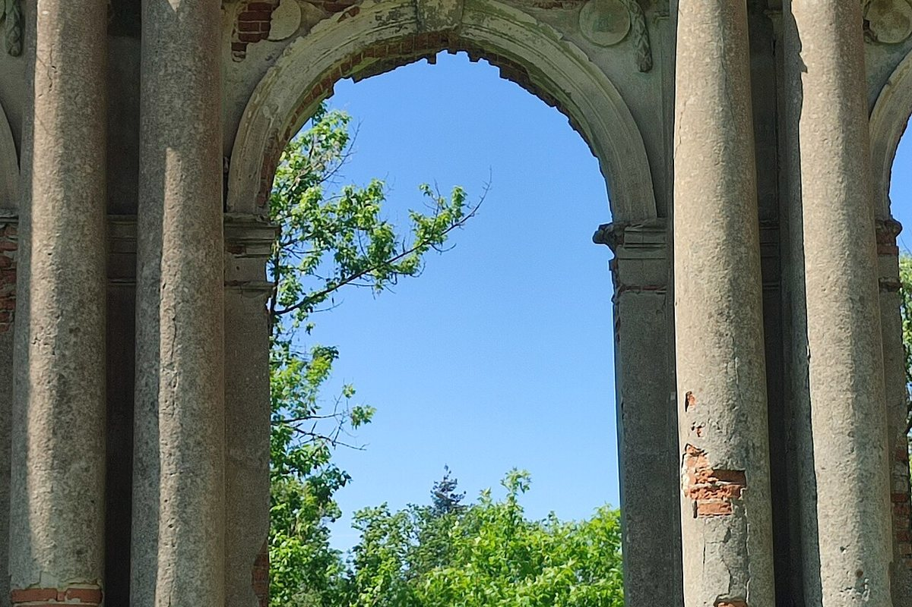
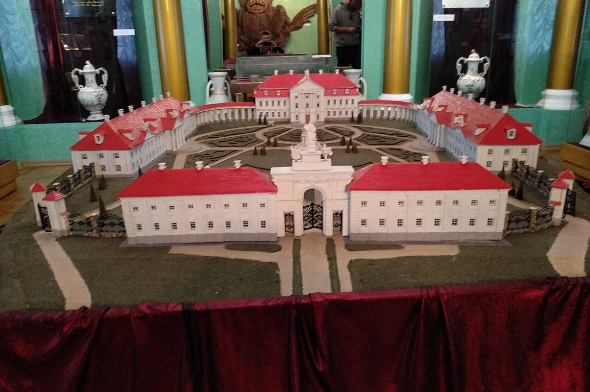

The ruins of the Sapieha family palace, once called the “Belarusian Versailles”. Part of the complex has been restored and a museum operates here.
Ruzhany Palace is an 18th-century architectural monument in the late classicist style. It is called the “Belarusian Versailles” because it was modelled on the famous residence of the French kings.
The palace was the main residence of the Sapieha family. The complex survives in ruins: the facade wall of the risalit, the walls of the right wing, the left wing and the entrance gate remain.
In early 2011 the “Ruzhany Palace Complex of the Sapiehas” museum opened. Two wings and the entrance gate have been restored; four exhibition halls and one display hall are open to visitors.
The exhibitions cover the castle and palace periods, the history of Ruzhany and the Sapieha family. Theatrical historical reconstructions are also held here.

